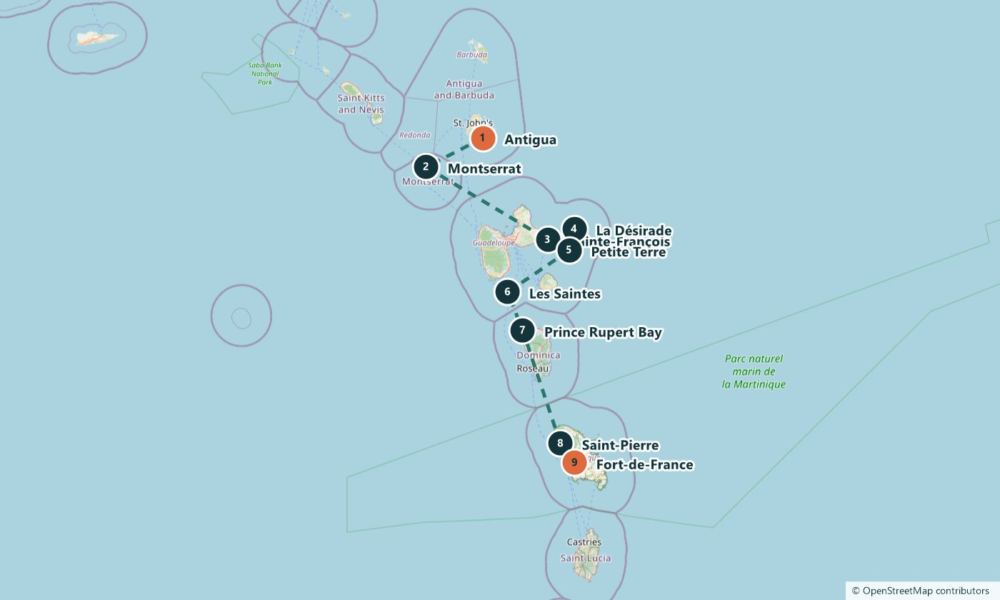

Leg 6 · Antigua → Martinique
Twenty days of volcanoes, rainforest and French islands
Island hopping
15 Mar – 4 Apr 2027 · 2–20 days · 270 nautical miles on the full leg
The route
The longest island-hopping leg: 270 nautical miles over 20 days, so you spend more time ashore than at sea. Walk the ruins of Saint-Pierre, take a rowing boat up the Indian River on Dominica and swim in the bay at Les Saintes.
The stops
Antigua
Antigua and Barbuda. Departure. See on Google Maps
Montserrat
Montserrat. An active volcano. The 1995 eruption buried the old capital, Plymouth, and the south of the island is still closed. See on Google Maps
Sainte-François
Guadeloupe. A fishing town and marina on the eastern tip of the island. See on Google Maps
La Désirade
Guadeloupe. An island 11 kilometres long with about 1,500 residents and few visitors. See on Google Maps
Petite Terre
Guadeloupe. Two uninhabited islands in a nature reserve, with thousands of iguanas on the beaches. See on Google Maps
Les Saintes
Guadeloupe. Two inhabited islands and a bay listed by the Most Beautiful Bays in the World club. See on Google Maps
Prince Rupert Bay
Dominica. The starting point for boat trips up the Indian River, where scenes from Pirates of the Caribbean were filmed. See on Google Maps
Saint-Pierre
Martinique. The old capital, destroyed in 1902 when Mont Pelée erupted and killed about 28,000 people. You walk through the ruins and visit the volcano museum. See on Google Maps
Fort-de-France
Martinique. The capital, with a covered spice market and rum from the island’s distilleries. See on Google Maps
The plan for each day, and exact harbours, are shared when you book and can change with the weather.
The route on a map
